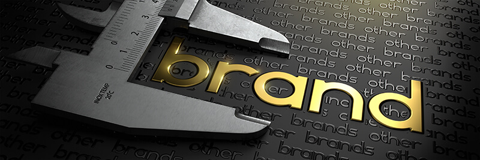
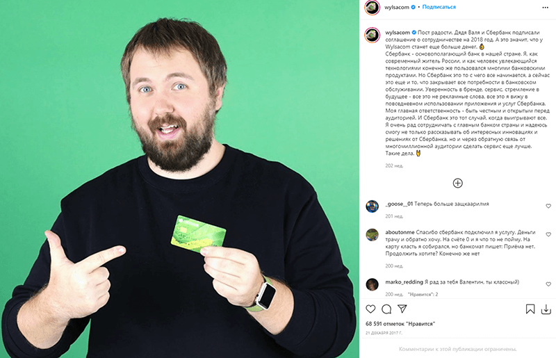

Красивое слово «амбассадор» на русский язык можно перевести как «представитель». Также как дипломат представляет страну иностранным гражданам, амбассадор представляет бренд компании ее будущим клиентам. В статье мы подробно расскажем, как это происходит, начиная с истории возникновения амбассадорства, заканчивая примерами из реальной практики известных брендов.

Кто такой амбассадор бренда
Простыми словами, амбассадор бренда - это человек, который ненавязчиво рекомендует бренд и выступает в роли примера успешного применения брендовых продуктов. Значение слова «амбассадор» - это посол, представитель или дипломат, т.е. тот, кто говорит от имени компании. В узком понимании - это медийное лицо, нанятое организацией или фирмой, чтобы представить бренд. В реальности это не обязательно оплачиваемый штатный сотрудник компании, но любой лояльный потребитель, который делится своим опытом в социальных сетях или на страницах собственного сайта.
Амбассадорство как идея возникло в 30-е годы прошлого века в США, когда крупные компании впервые начали сотрудничать со звездами кино и музыки с целью рекламы товаров. Появилось понятие «лицо бренда». Компании нередко заключали и до сих пор заключают долгосрочные контракты не с действующими мировыми или национальными звездами, а с перспективными новичками. Например, компания Nike заключила контракт с легендой баскетбола Майклом Джорданом на заре его спортивной карьеры. Таким образом, головокружительный успех Джордана на уровне ассоциации оказался связан с кроссовками Air Jordans от фирмы Nike, которой удалось зарекомендовать себя, как бренд, который выбирают чемпионы, и как продукцию, помогающую достигать спортивных высот.
Амбассадор – это не всегда звездная персона, им может стать малоизвестный, но харизматичный человек, который любит и умеет общаться.
Миссия и 10 главных функций амбассадора
Амбассадор, будь он ангажированной известной личностью или лояльным клиентом-энтузиастом, вызывает у аудитории желание быть похожим на него. Если это успешный человек, бренд автоматически ассоциируется с успешностью (бизнесмен); если привлекательный, то с привлекательностью (модель); если счастливый, то со счастьем (обыватель, чья жизнь становится лучше благодаря брендовым продуктам).

Краткий обзор 10 основных функций:
- Повышение узнаваемости бренда. Если внимание сотен тысяч направлено на певца, актера или спортсмена, который носит брендовую одежду, это значит, что их внимание направлено и на бренд тоже.
- Привлечение новых лояльных клиентов. Лояльная аудитория медийного лица склонна ему подражать, поэтому, если известная персона проявляет лояльность к бренду, его аудитория делает то же самое.
- Увеличение охвата. Иногда бренд воспринимается узко, как производитель товаров для определенной сферы (например – классической обуви), из-за чего совершенно неизвестен в других (например – в сфере спортивной обуви). Если компания нацелена на расширение влияния, им могу помочь амбассадоры, пользующиеся вниманием и уважением у нужной целевой аудитории.
- Поддержание положительного образа бренда. Положительный образ означает, что клиенты рады и довольны, их проблемы решаются, а жизнь становится лучше. Задача сотрудничества с амбассадором – создать и поддерживать образ такого клиента из числа известных и уважаемых персон.
- Участие в рекламных кампаниях. Люди доверяют не рекламе, а людям, поэтому живые отзывы, комментарии и примеры сегодня дают более высокую конверсию, чем просто рекламные тексты, ролики и прочий маркетинг. В идеальном варианте одно усиливается другим.
- Участие в планировании и проведении маркетинговых мероприятий. Популярная личность – это центр притяжения, поэтому его участие в мероприятии само по себе является гарантией интереса целевой аудитории.
- Создание контента для социальных сетей (посты и stories в личных аккаунтах) и других медиа-ресурсов. Через личные аккаунты подписчики наблюдают за жизнью своих кумиров, перенимают их вкусы, привычки, стиль жизни, следуют их рекомендациям.
- Повышение узнаваемости бренда с помощью сарафанного радио. Обсуждение внешнего вида амбассадора также можно привязать к бренду: фанаты сами будут рассказывать друг другу, где можно купить сумочку как у Мадонны.
- Отслеживание предпочтений клиентов и предоставление обратной связи отделу маркетинга. Если говорить об амбассадорах-энтузиастах, т.е. о лояльных покупателях, то они практически всегда охотно дают обратную связь и делятся своим мнением с другими.
- Участие в создании креативных идей для маркетинга и позиционирования. Также как и в предыдущем пункте, амбассадор-клиент сам генерирует идеи и подсказывает компании способы улучшить имидж.
Навыки и качества амбассадора
Лицом бренда не может быть любой, потому что целевой аудитории всегда интересен кто-то особенный. Особенность амбассадора не обязательно должна выражаться в его всемирной известности или исключительном социальном статусе, т.к. работать с такими людьми может позволить себе не каждая компания, а эффективный маркетинг нужен всем. Особенность создается конкретными качествами, некоторые из них мы разберем прямо сейчас.
Умение интересно и небанально презентовать продукт бренда
По-другому это качество можно назвать убедительностью. Глядя на представителя бренда, никто не должен видеть сотрудника, отрабатывающего свой гонорар. Человек должен вызывать интерес, вдохновение, доверие, должен создавать ощущения новизны. Не столь важно, знает ли он сам, как это сделать, важнее – обладает ли он необходимыми данными для этого:
- типажом и внешностью;
- темпераментом;
- голосом;
- чувством вкуса и стиля.
Знание маркетинговых приемов, техник, инструментов
Амбассадор занимается рекламой бренда, а в рекламе есть прекрасно разработанные методики, которые обязательно нужно применять, понимать или хотя бы знать об их существовании. Это азы маркетинга. Человек, знакомый с ними, лучше справится со своей ролью, чем тот, кто слышит о них впервые.
Приверженность бренду
Это очень желательное условие сотрудничества с амбассадором, потому что человек наилучшим образом делает ту работу, которая приносит ему удовольствие и соответствует его мировоззрению – стоит в одном ряду с любимым занятием. Человек становится искренним и уже не рекламирует товар, но делится собственными открытиями, дает эмоциональный ответ. Рассказывать о приверженности бренду становится гораздо легче, когда она действительно есть. Также человека не беспокоит моральная сторона вопроса, потому что он не лжет. Часто компании сначала создают приверженность у амбассадора и только потом начинают сотрудничать с ним в сфере маркетинга. Для этого ему бесплатно предоставляются продукты компании, дается возможность оценить, сделать выводы, и только после этого обсуждаются варианты его общения с подписчиками, публикации и т.д.
Постоянное присутствие в интернете
Не пользоваться интернетом для рекламы и привлечения клиентов онлайн - непозволительная роскошь. Люди привыкли, что связь с внешним миром лежит у них в кармане, поэтому амбассадор может не присутствовать в интернете только в случае, если интернет наполняется информацией о нем и без его присутствия. Но даже тогда теряется важный инструмент влияния на целевую аудиторию – личные страницы амбассадора в соцсетях. Персональная страница создает ощущения присутствия и личного мнения: все, что публикуется на такой странице, воспринимается как исходящее от ее владельца непосредственно. Поэтому посты в соцсетях амбассадора для тех, кто на него подписан, выглядят намного убедительнее, чем профессионально отснятые рекламные ролики с его участием.
Соответствие целевой аудитории бренда
Представьте, что будет, если Ольга Бузова начнет рекламировать моторное масло, а Михаил Шуфутинский – женские сумочки. Аудитория не поймет, возникнет обратный эффект, отторжение. Чтобы этого не случилось, амбассадор должен принадлежать к целевой аудитории сам, и не просто принадлежать, а быть ее типичным представителем.
Безупречная репутация
Черный пиар – тоже пиар, это утверждение справедливо для компаний, которые вообще не имеют имени и хотят выделиться из безликой массы конкурентов хоть чем-нибудь. Но видные бренды не могут позволить себе таких методов раскрутки, потому что о них и так все знают, черный пиар станет для них скорее позором и приведет к критике со стороны их же постоянных клиентов. Справедливо и обратное утверждение: чем респектабельнее та персона, которая рекомендует бренд, тем выше статус этого бренда в глазах клиентов.
Харизматичность
Даже звезда не всегда подходит на роль амбассадора. Например, в рекламе почти никогда не фигурируют лауреаты научных или литературных премий, хотя они могут быть известны всему миру, но постоянно присутствуют те, кто всегда на виду - актеры, вокалисты, шоумены. Это говорит о том, что харизма продается дороже, чем реальные ценные достижения, восприятие определяется имиджем, экспертом в глазах потребителя становится тот, кто похож на эксперта, даже если он – специалист средней руки.
Какие бывают амбассадоры
Выделяют 9 категорий в зависимости от специфики бренда, формата соглашения, степени влияния на аудиторию и других факторов. Они не равны друг другу и не могут одинаково применяться во всех сферах бизнеса, поэтому при поиске амбассадора важно учитывать, какой подходит именно вам.
{kind=link}
Адвокат бренда
Адвокат бренда – это клиент, который рекомендует продукты бренда. Его рекомендации интересны схожей демографической группе. Например, мамы детей до 5 лет интересуются мнением других мам при выборе детских товаров. Рекламным роликам люди доверяют неохотно и всегда стремятся узнать о продукте больше, чем сказано в рекламе. Советы людей, которые похожи на них самих, имеют те же проблемы и приблизительно тот же уровень достатка, воспринимаются с доверием. Если это яркие представители целевой группы, в них видят образ для подражания. Соответственно, чтобы приблизиться к их стилю и образу жизни, целевая группа стремится одеваться как они, выглядеть как они, жить как они, пользоваться теми же продуктами.
Студенческий посол
Это адвокат бренда, работающий с молодежью до 25 лет и делающий это в непосредственном общении – в институтах, на «тусовках» и т.д. Он сам относится к данной возрастной категории и просто общается со своими однокурсниками в непринужденной манере, продвигая таким образом брендовые товары. Он может проводить акции, нацеленные на повышение осведомленности о бренде, или использовать методы партизанского маркетинга – носить брендовую одежду, дарить образцы и т.д.
Нишевый авторитет
Авторитет в определенной области или деле, мастер, к мнению которого прислушиваются. Чаще всего в роли таких нишевых авторитетов выступают блогеры, потому что как бы ни был человек хорош в своей сфере, никто не узнает об этом, если он не будет всегда на виду. Это не касается знаменитостей, о которых и без блогов постоянно говорят в медиапространстве. Нишевый авторитет хорош в продвижении нишевых брендов, производителей специализированных товаров. Например, автор блога по теме рыбалки может продвигать брендовые рыболовные принадлежности.
Инфлюенсер
Инфлюенсер, подобно нишевому авторитету, воспринимается своей аудиторией как надежный источник информации. Это знаменитости с большим количеством фанатов или подписчиков в соцсетях, обычно – реализованные в какой-то конкретной сфере. Например, культовый футболист, гитарист или бизнесмен легко могут стать инфлюенсерами в своих областях, т.к. их влияние на мнение потребителей огромно.
Амбассадор опыта
Это представитель, очеловечивающий бренд, предающий бренду черты личности. Его задача – строить отношение с клиентами, общаться, нравиться. Он работает непосредственно в живом общении на мероприятиях, крупных событиях или прямо на улице. Это приятный человек, олицетворяющий собой определенный стиль жизни или ценности, способный «заразить» ими окружающих. Опыт общения с таким человеком запоминается лучше, чем самая стильная брендовая этикетка.
Официальный амбассадор
Это штатный сотрудник компании, профессионал, который представляет бренд по определенным заранее оговоренным стандартам. Он владеет внутренней информацией, проходит обучение или подготовку внутри компании и может выполнять разные поручения. Официальный амбассадор может выступить как адвокат бренда или студенческий посол.
Неформальный амбассадор
Это клиент, который приводит друзей и получает скидку или подарок. Неформальное амбассадорство распространено в сети в виде различных реферальных программ. Клиенту предоставляется персональная ссылка-приглашение, каждая регистрация по этой ссылке приносит ее обладателю бонусы, которые можно обменять на продукт или услугу.
Энтузиаст
Энтузиасты, это целая категория потенциальных амбассадоров, с которыми можно сотрудничать на коммерческой основе или просто поощрять их желание сделать свой любимый бренд лучше. В идеале любой амбассадор должен быть энтузиастом, т.е. проявлять заинтересованность в популяризации бренда. Среди энтузиастов часто проводят конкурсы, розыгрыши – побуждают их активно делиться мнением о бренде, опытом использования и т.д.
Сотрудник амбассадор
Компании нечасто используют сотрудников в качестве послов бренда. Такая практика имеет как плюсы, так и минусы. Очевидный минус в том, что сотрудник по умолчанию ангажирован, т.е. получает плату за услуги, его объективность ставится под сомнение. Но с другой стороны именно сотрудник обладает наиболее полной информацией о компании, благодаря чему его мнение автоматически становится более авторитетным, чем мнение рядового потребителя.
Амбассадор и другие виды рекламы – главные отличия
Обычная реклама в явной форме пытается продать товар. Это касается всех ее видов – слоганов, продающих текстов, роликов и т.д. Исключением может быть реклама, в которой освещается человеческая история. Но и к этому зритель давно привык.
Амбассадор своим примером показывает, как продукт помогает покупателю решать его проблемы и становиться счастливее. Он не навязывает и не продает, он делится реализациями, рассказывает о своем выборе. Тот, кто смотрит на амбассадора, не видит попытки что-то продать, но видит историю живого человека, а выбор делает сам, без прямого давления.
Рекламу показывают всем без разбора, даже таргетированные объявления в интернете выглядят навязчиво и не вызывают желания кликать по ним. Средний человек предпочитает самостоятельно искать то, что ему нужно, по факту возникновения необходимости. На рекламный контент подписываются очень редко, это происходит только в тех случаях, когда клиент уже лоялен к бренду и хочет получать от него новости. А на блогеров подписываются массово, причиной подписки является интерес к человеку или контенту.
Отношения подписчика с амбассадором никак не связаны с коммерцией, именно поэтому коммерческий посыл воспринимается не как навязчивая реклама, а как добрый совет от друга, которому можно доверять.
Условия сотрудничества и отношения
Если амбассадор не является энтузиастом-добровольцем, с ним заключается договор, в котором расписывается процесс сотрудничества. В большинстве случаев они типовые – содержат в себе определенный регламент поведения, действия и обязанности по проведению определенного количества акций, презентаций, постов в соцсетях и т.д.
Возможная заработная плата
Зависит от возможностей влияния – что умеет амбассадор. Студенческий посол может зарабатывать 100-300$ в месяц. Владелец профиля с количеством подписчиков от 100 тыс. может рассчитывать на заработок 1000-5000$. Мировые знаменитости получают не менее 10 000$ в месяц. Неформальные амбассадоры и энтузиасты зарплату получают не всегда, они генерируют контент или приводят друзей за товар, скидки, привилегии или иной способ поощрения.
Отношения между амбассадором и брендом
Регулируется та часть отношений, которая заметна покупателю. Например, посол сети фитнес-клубов не может быть в обычной жизни любителем выпивки, фастфуда и лежания на диване перед телевизором, он должен жить фитнесом и здоровьем, иначе зритель почувствует фальшь. Также амбассадор не имеет права пользоваться или продвигать продукты другого бренда, т.к. это тоже вызовет вопросы к его лояльности у аудитории.
Главные условия договора с амбассадором бренда
К таковым относятся:
- частота упоминания бренда;
- какой контент публикуется, как часто, где именно и что именно нужно написать;
- сколько презентаций будет подготовлено за конкретный период времени;
- манера поведения;
- отношение к конфиденциальной информации;
- обязательства в случае невыполнения условий договора, а также условия его расторжения.
Пример договора с амбассадором бренда
Договор составляется в свободной форме, его не обязательно заверять у нотариуса, достаточно подписей. Обязательное содержание:
- реквизиты сторон;
- имена исполнителя и нанимателя;
- в чем заключается сотрудничество, каковы условия выплат;
- в каких случаях договор расторгается;
- ответственность за разглашение конфиденциальной информации;
- подписи.
Что нельзя амбассадору
Нельзя говорить о бренде, что вздумается, тем более – критиковать или нелестно отзываться. Нельзя хвалить или рекомендовать товары других брендов, сохранять контакты с их представителями. Нельзя разглашать инсайдерскую информацию. Нельзя вести себя неподобающим послу бренда образом. Например, если вы – посол бренда веганских продуктов и вас застукают на шашлыках или на охоте, никто никогда вам больше не поверит.
Как найти и выбрать амбассадора
Представителем бренда в потенциале может быть кто угодно. Поэтому, прежде чем сделать выбор, нужно сузить круг подходящих претендентов. Предлагаем 5 основных критериев, которые помогут определить, насколько потенциальный амбассадор подходит вашему бренду.

Размер бизнеса и маркетинговый бюджет
Это первое, что следует прояснить, потому что бюджет определяет, кого вы сможете пригласить – амбассадоры делятся на разные классы по доступности. При неограниченном бюджете это может быть любая знаменитость. Если бюджет невелик, можно пригласить микроинфлюенсера или блогера со средним числом подписчиков – неплохо для профильного магазина. Если совсем мал – выручит неформальное амбассадорство с системой скидок и поощрений.
Сфера деятельности компании
Существуют универсальные и специфические сферы. Любая знаменитость может рекламировать одежду, наручные часы или парфюм, но не каждая – лопаты или сантехнику.
Целевая аудитория амбассадора
Необходимо убедиться, что она есть. Целевая аудитория, это живые активные люди с которыми можно общаться и взаимодействовать, а не просто груз мертвых профилей в подписках. Если она есть и она соответствует вашей сфере, то партнерство будет продуктивным.
Профессиональные умения и навыки
В зависимости от типа деятельности и способа взаимодействия с аудиторией это могут быть:
- актерское мастерство, поставленная речь;
- умение писать интересные посты или статьи;
- профессионализм в своей области.
Личные качества
Определяют, насколько человек надежен, не повредит ли ассоциация с ним имиджу компании. К ним относятся:
- стрессоустойчивость;
- репутация профессионала;
- лидерские качества, харизма.
5 правил эффективной работы с амбассадорами
Предлагаем 5 пунктов, которые нужно учесть, чтобы сотрудничество с амбассадором оправдало ваши ожидания.
{kind=link}
Определите цель
Цель должна быть четко сформулирована. Даже если целей несколько, выделите одну главную. Примеры целей:
- повысить узнаваемость;
- вывести продукт на рынок;
- сформировать лояльное сообщество;
- создать или поддержать репутацию бренда.
Подумайте над вознаграждением
Вознаграждение – это не всегда оклад. Гибкая система поощрений обеспечит вам целую сеть послов, не требующих регулярных денежных выплат. Если же вас интересует представительство известного человека, нужно сделать ему предложение, от которого он не захочет отказываться.
Внедряйте новые идеи
Творческий подход часто оказывается на порядок эффективнее проторенных дорожек. Сам амбассадор, если он приверженец бренда, может многое вам подсказать. Также хорошим источником идей является ваша целевая аудитория: если разработать удобную систему обратной связи и поощрять клиентов делиться своим видением, они принесут вам множество нестандартных идей.
Дайте амбассадору творческую свободу
Заинтересованный амбассадор иногда действует интуитивно, иногда – на грани фола. Он может придумать что-то совершенно неординарное, не вмещающееся в рамки традиционного понимания амбассадорства. Не ограничивайте его творческий порыв, напротив, ищите посла, способного на творчество.
Если вы друг другу не подходите, поймите это вовремя
Если ваше сотрудничество не строится на общих ценностях, его можно заранее считать проваленным. Признаки отсутствия общих ценностей:
- интерес обеих сторон сводится к финансовой выгоде;
- посол не ваш клиент, не является приверженцем бренда;
- договоренности сводятся к набору функций без творческой составляющей, без желания расти, развиваться, генерировать новые маркетинговые идеи.
7 типичных ошибок при выборе амбассадора и работе с ним
7 типичных ошибок совершаются компаниями, не имеющими навыка сотрудничества с послами. Если вы решили нанять амбассадора в первый раз, этот список поможет вам не выбросить деньги на ветер и не разочароваться в эффективном маркетинговом инструменте.
{kind=link}
- Необоснованный выбор. Выше мы уже приводили критерии выбора подходящего представителя. Если вы не сверяетесь с ними, то высока вероятность, что выбор будет случайным, не основанным на предпосылках к продуктивному партнерству.
- Постановка неясных целей и отсутствие стратегии. Избегайте абстрактных целей: сейчас все плохо, наймем амбассадора, чтобы все стало хорошо. У вас должно быть видение результата и готовая стратегия его достижения в определенные сроки.
- Чрезмерная концентрация на продажах. Амбассадор – не продавец, он – вдохновитель.
- Приоритет охватам. Точечное воздействие работает эффективнее, чем массовое во многих случаях.
- Ограничение творческой свободы. Иногда компании стремятся избежать неожиданностей через жесткий регламент действий представителя. Это превращает представителя в робота, действующего по инструкции, и лишает его энтузиазма.
- Использование одной социальной сети. Важно задействовать каждую соцсеть, даже если не получится привлечь влиятельных инфлюенсеров из-за ограничения бюджета.
- Оценка результатов. Не пускайте деятельность представителя на самотек, создайте метрики для каждой цели, оценивайте эффективность.
Преимущества и недостатки работы с амбассадорами
Преимуществ амбассадорства больше, чем недостатков, этим обусловлена популярность метода. Многие недостатки можно нивелировать или устранить полностью при грамотном подходе.
Преимущества:
- Углубление доверия к бренду;
- легкость запуска программы;
- повышение репутации бренда;
- новая лояльная аудитория;
- возможность просто и наглядно донести до аудитории философию и концепцию бренда.
Недостатки:
- интуитивный характер сотрудничества;
- человеческий фактор;
- возможная утечка информации.
Как стать амбассадором бренда
Если у вас много подписчиков в социальных сетях или есть популярный блог на определенную тематику, стать послом несложно: определите круг компаний, которым могут быть полезны ваши услуги, затем направьте им коммерческие предложения. Если же ничего этого нет, но есть энтузиазм и желание попробовать себя в новой роли, рассказываем с чего начать.

Продвижение себя
- Сделайте хобби отправной точкой;
- увеличивайте количество подписчиков среди пользователей соцсетей;
- не накручивайте подписки специально, ведите страницы так, чтобы на них хотелось подписаться;
- общайтесь с людьми вне интернета, ищите новые каналы общения, становитесь узнаваемым;
- помогайте людям решать проблемы с помощью уникального контента;
- составляйте контент-планы;
- начинайте с малого, развивайтесь постепенно;
- учитесь думать как профессиональный маркетолог;
- старайтесь видеть главное в любом проекте, за который беретесь.
Амбассадору, работающему с людьми на живых встречах и мероприятиях, будет полезны курсы ораторского искусства, актерского мастерства и самопрезентации.
Где учат на амбассадоров
Профильное обучение можно пройти в рекламном агентстве, но получить полезные навыки можно записавшись на курсы по направлениям:
- актерское мастерство;
- ораторское искусство;
- активные продажи;
- проведение массовых мероприятий.
Карьерная лестница амбассадоров
Перспективы как у рекламного агента. Можно вырасти до менеджера, регионального менеджера, начальника отдела рекламы. Дальнейший рост, скорее всего, будет горизонтальным, т.е. можно сменить деятельность внутри компании, но остаться на своем уровне.
Выгоды сотрудничества
Сотрудничество бренда и посла при правильном подходе не бывает невыгодным. Компания получает возможность предстать перед своими потенциальными клиентами в образе живого человека, воспринимаемого менее критично, с меньшим недоверием, с большим интересом.
Кому выгодно сотрудничество с амбассадором бренда
Всем. Особенно производителям качественных, но пока неизвестных товаров. Это поможет быстрее зацепить покупателя, понравиться, запомниться, показать товар лицом. Крупные бренды, применяющие весь спектр маркетинговых стратегий, также не отказываются от услуг именитых представителей.
Выгодно ли быть послом бренда
Минусы работы амбассадоров очевидны для тех, кто рассматривает ее в качестве постоянной работы. Чаще всего это дополнение к основной деятельности, не каждая компания предлагает солидные денежные вознаграждения своим послам.
Кого выбирают мировые бренды
- Nike – спортсменов африканской или азиатской внешности;
- Canon – фотографов, снимающих природу;
- Adidas – футболистов и легкоатлетов;
- Dior – широкий выбор от моделей до дизайнеров, приоритетом является продвижение логотипа;
- Zara – моделей, музыкантов, артистов;
- Nikon – фотографов, публикующих фотографии людей и живой природы;
- Puma – баскетболистов, легкоатлетов, пловцов;
- Sony – операторов, фотографов, звукорежиссеров и производителей техники;
- BMW – лайфстайл-блогеров;
- Gucci – дизайнеров, эстрадных исполнителей, владельцев бутиков;
- Mercury – модели, эстрадные исполнительницы;
- AVON – голливудские звезды;
- Oriflame – голливудские звезды;
- «Сбербанк» - блогеры-миллионники по технологической тематике;
- Lenovo Vibe Shot – молодежные эстрадные исполнители.
Простые примеры работы амбассадоров
- Студентка Даша избавилась от лишнего веса благодаря фитнес-резинкам, поделилась своей историей на «Айрекоменд» и репостнула ее в ВКонтакте. Бренд отблагодарил Дашу бонусами, а подписчики Даши смогли решить схожую проблему благодаря ее рекомендациям в публичном доступе.
- Алена работает менеджером, а свободное время посвящает чтению книг по бизнесу и предпринимательству. Алена рассказывает о прочитанных книгах в социальных сетях и получает от бизнес-издательств скидки и наборы новых книг в подарок.
- Артем любит есть пиццу с друзьями. Каждую вечеринку он делает несколько фото, выкладывает их в соцсетях, отмечает друзей и сразу получает купон на следующую пиццу от любимой пиццерии.
- Наталья уже выбрала косметику всей своей жизни и ни на что другое ее не променяет. Она внимательно отслеживает последние новости, чтобы первой пробовать новинки бренда. Она регулярно делится своим опытом в instagram, за что получает от бренда новые наборы еще до выхода в продажу.
- Ева – веган и зоозащитник, она покупает этичные продукты с помощью популярных сервисов доставки и получает скидку за регулярные отзывы.
- Ринат любит кроссовки спортивного бренда до такой степени, что купил себе 4 пары и фоткает их у себя на ногах каждый день. Бренд не остается равнодушным и иногда дарит Ринату новые модели обуви.
Необычные кейсы брендов
- Нестандартное решение. Фешн-блогер Анна О’Брайен стала представителем спортивной и туристической одежды. Звучит вполне заурядно, если не знать, что Анна весит 150 килограмм.
- Удачный креатив блогера. Марка одежды Brooks Brothers используют в рекламе креатив инста-блогера Майка Меллиа. Блогер постит зацикленные видео, похожие на гифки, одно из них впервые опубликовано на табло в Нью-Йорке. На видео Майк поглаживает овцу, одетую в свитер с логотипом Brooks Brothers.
- Виртуальные инфлюенсеры. Это полностью выдуманные персонажи, созданные при помощи 3D графики. От их имени ведутся аккаунты в социальных сетях, выкладываются фото, сториз. Услугами таких инфлюенсеров пользуются крупные бренды - Chanel, Vans и другие.
- Бывший критик в роли представителя. Прецедентом стало сотрудничества «Сбербанка» с техноблогером Wylsacom, который всегда отличался резко негативным отношением к продуктам компании.
- Выбор аудитории. Неожиданным ходом стало сотрудничество Nike и юной художницы и фотографа из России Елены Шейдлиной. Девушка выложила видео с пробежки в экипировке Nike, оно набрало более 3 млн. просмотров, что свидетельствует о точном попадании в целевую аудиторию, несмотря на несоответствие профилей бренда и блогера.
- Работа с командами. Adidas, Reebok и Cannon делают ставку на большое количество представителей разного уровня звездности. Например, Adidas сотрудничает с Кендалл Дженнер – моделью с более чем 198 млн. подписчиков в инстаграме. И в то же время бренд представляют звезды второй категории, такие как Ирина Мизунова.
- Амбассадоры-«миллионеры» в экспериментальных кейсах. Юрий Дудь был неожиданно выбран на роль представителя Альфа-Банка. На первый взгляд сложно найти какое-либо соответствие между аудиторией топ блогера и целевой аудиторией банка, поэтому кейс, скорее всего, стал экспериментальным.


Неудачные примеры сотрудничества с амбассадорами брендов
- Егор Крид – стал продвигать Samsung, затем Oppo, и все это время публиковал посты через приложения Apple.
- Тимати – как и Егор Крид, был замечен в момент использования iPhone, когда продвигал смартфоны Yota.
- Хабиб Нурмагомедов – был выбран в качестве лица марки Toyota, что озадачило многих ее приверженцев. Нурмагомедов олицетворяет человека агрессивного, противоречивого, с резкими взглядами, что явно не добавило очков производителю автомобилей.
- Николай Басков, Ольга Бузова – согласились стать лицами финансовой пирамиды Кэшбери, чем сильно испортили себе репутацию и даже получили несколько судебных исков.
- Регина Тодоренко – позволила себе некорректное высказывание в прямом эфире и потеряла контракт с Pampers.
- Роналдиньо – будучи амбассадором бренда Coca-Cola, провел пресс-конференцию со стоящими на столе двумя банками Pepsi и потерял контракт.
- Дэвид Бекхэм – был лицом Motorola, но попал на фото с айфоном в руках.
- Шарлиз Терон – получила иск на 20 млн. долларов от бренда Raymond Weil – производителя швейцарских часов, чью продукцию продвигала. Причиной стало ее появление на публике в часах Christian Dior.

Заключение
Феномен амбассадора бренда можно рассматривать с разных ракурсов: для одних это отличный вариант заработка, для других – спасительный маркетинговый ход, для третьих – честный способ совмещения и того и другого. Мы постарались освятить явление со всех ракурсов так, чтобы материал был полезен и будущему профессиональному амбассадору и его потенциальному работодателю.